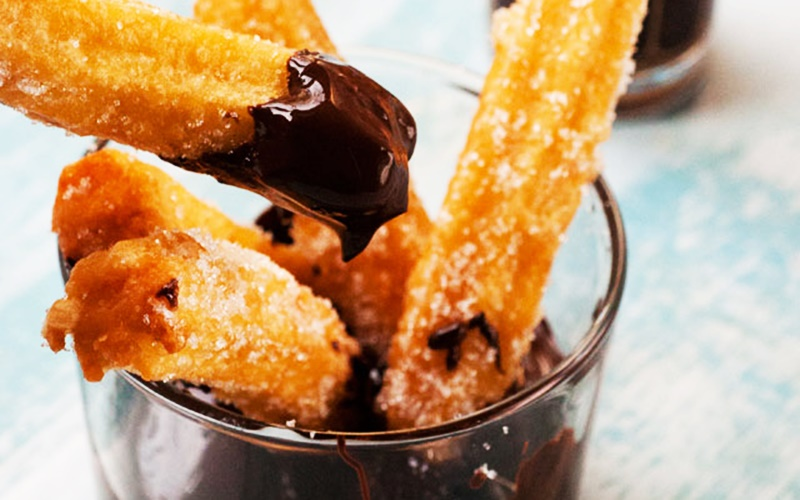

Churros Tatlı Tarifi
Churros bir İspanyol tatlısı, oldukça farklı içeriklerle hazırlansa da sunumu hep aynı. En önemli özelliği hamurun 2 kez pişmiş olması. Birincisi tencerede kavurarak, ikincisi ise kızartılarak. Bu noktada profiterol topları hazırlarken kullandığımız choux hamuru ile aynı.
Tarif => Ceyda Karsu

Kaç Kişilik: 2 kişilik
Hazırlama Süresi: 30 dakika
Pişirme Süresi: 10 dakika
Churros Tatlı Tarifi Malzemelri...
- 2 su bardağı un (250 gr)
- 1 su bardağı su (250 gr)
- 3 adet yumurta (orta boy tanesi 50 gr civarı)
- yarım su bardağı tereyağı (125 gr)
- 1 çay kaşığı tuz
Churros Tatlı Tarifi Kızartma İçin:
Churros Tatlı Tarifi Servis için:
- 1 su bardağı toz şeker
- 2-3 paket bitter çikolata
Churros Tatlı Tarifi Yapılışı:
- Suyu, tereyağını ve tuzu orta boy bir tencereye alın, orta ateşte kaynatın.
- Tencerenin altını kısın ve kısık ateşte un toparlanıncaya kadar karıştırarak pişirin.
- Toplanan hamuru ocaktan alın. Hamurun üzerine yumurtaları tek tek ekleyerek tahta kaşıkla ya da silikon kaşıkla karıştırın.
- Yumurtaların pişmemesi için hamura tek tek ilave edin. 1 tane ilave edip karıştırın, tamamen hamura karışınca diğer yumurtayı ekleyin, son yumurta içinde aynı işlemi uygulayın.
- Yumuşak ve hafifçe yapışkan bir hamur elde ettiğinizde hamurunuzu duy takılı krema sıkma torbasına alın.
- Ay çiçek yağını tavaya alın ve kızdırın. Kızan yağın içine istediğiniz uzunlukta hamur sıkın ve elinizle kesin.
- Fotoğraftaki gibi kızarınca kevgir yardımıyla yağınız süzdürerek havlu kağıt serilmiş tabağa alın.
- Sıcak tatlıları toz şekere bulayın ve benmaride erittiğiniz çikolatayla servis edin.
Afiyet olsun